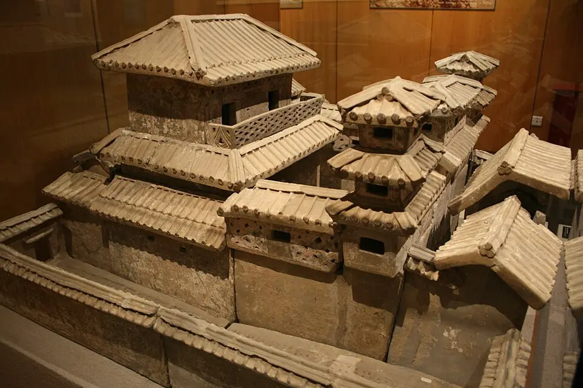
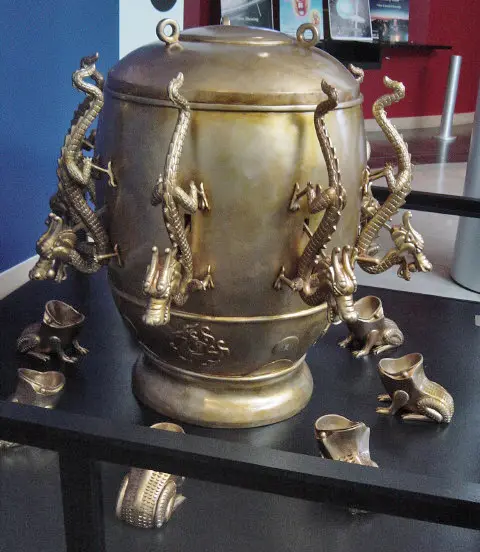
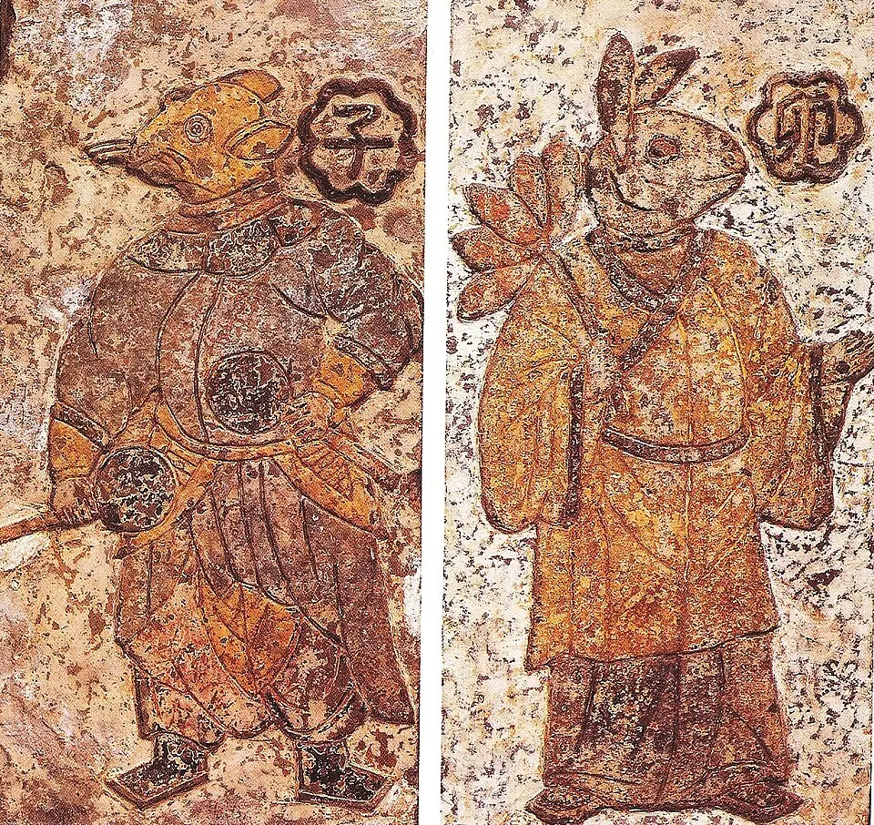

Máy báo động đất của Trương Hành và trận động đất không ai cảm thấy
Một viên bi đồng rơi vào miệng cóc, nhưng kinh đô không ai thấy đất rung. Vài ngày sau, một sứ giả từ phương tây về đến Lạc Dương.

Ở kinh đô Lạc Dương thời Đông Hán, một chiếc bình đồng lớn bỗng nhả ra một viên bi. Viên bi rơi từ miệng một con rồng xuống miệng một con cóc bên dưới, kêu leng keng. Không ai trong thành cảm thấy đất rung. Theo Hậu Hán thư, vài ngày sau một sứ giả từ phía tây về báo tin: vùng Lũng Tây, nay thuộc tỉnh Cam Túc, vừa có động đất. Con rồng đã nhả bi đúng về hướng đó.
Viên bi rơi từ miệng một con rồng xuống miệng một con cóc bên dưới, kêu leng keng.
Người làm ra chiếc bình
Trương Hành (78 đến 139) là một quan chức triều Đông Hán, đồng thời là nhà thiên văn, toán học, kỹ sư thủy lực, nhà thơ và họa sĩ. Ông làm quả cầu hồn thiên chạy bằng sức nước, cải tiến đồng hồ nước bằng cách thêm một bể bù áp, và lập danh mục khoảng 2.500 ngôi sao. Ông viết rằng Mặt Trăng hình cầu và sáng nhờ phản chiếu ánh Mặt Trời.
Năm 132, ông trình lên triều đình một thiết bị gọi là Hậu phong địa động nghi, tức "máy đo gió mùa và chuyển động của đất". Giới khoa học ngày nay xếp nó vào loại máy nghiệm địa chấn: nó cho biết có động đất và hướng của nó, nhưng không ghi lại diễn biến rung theo thời gian như một địa chấn kế.
Cỗ máy hoạt động thế nào?


Theo mô tả còn lại, đó là một bình đồng đường kính khoảng 2 m. Quanh miệng bình có tám đầu rồng quay về tám hướng, mỗi con ngậm một viên bi đồng. Bên dưới là tám con cóc há miệng. Bên trong có một "cột trung tâm" có thể dịch chuyển theo tám hướng. Khi đất rung, cột này đẩy một hệ đòn bẩy, làm hàm một con rồng mở ra.
Cột trung tâm là gì thì không ai biết chắc. Năm 1936, nhà nghiên cứu Trung Quốc Vương Chấn Đạc phục dựng mô hình với một con lắc treo. Năm 1939, hai nhà địa chấn học Nhật Imamura Akitsune và Hagiwara ở Đại học Tokyo đề xuất một con lắc ngược. Năm 1963, Vương Chấn Đạc cũng chuyển sang mô hình con lắc ngược. Theo nhà nghiên cứu Hong-sen Yan, chưa bản phục dựng hiện đại nào đạt độ nhạy và chính xác như sử sách mô tả.
Sử sách chép gì


Câu chuyện đến từ Hậu Hán thư. Bộ sử này do Phạm Diệp (398 đến 445) biên soạn vào thế kỷ 5, hơn 200 năm sau khi nhà Hán sụp đổ. Phạm Diệp dựa chủ yếu vào Đông Quan Hán ký, một bộ ghi chép soạn ngay trong thời Hán. Như vậy, đây là nguồn chép lại, không phải nhân chứng.
Theo Hậu Hán thư, sau sự việc ở Lũng Tây, triều đình buộc phải thừa nhận cỗ máy có tác dụng. Một số tài liệu viết rằng trận động đất khi ấy cách Lạc Dương khoảng 400 đến 500 km. Bài viết về địa chấn kế trên Wikipedia cho rằng sự việc có lẽ gắn với một trận động đất lớn ở Cam Túc năm 143. Ngày tháng chính xác vì vậy không chắc chắn.
Ai đã đúc nó?
Nhà sử học Anthony Barbieri-Low cho rằng Trương Hành chỉ thiết kế, còn việc đúc là của thợ trong xưởng hoàng gia. Ông viết rằng một quan chức cấp khá cao như Trương Hành khó có thể đứng đổ mồ hôi trong lò đúc cùng thợ thủ công và nô lệ của nhà nước.
Thiết bị từng được làm lại. Nhà toán học Tín Đô Phương thời Bắc Tề và nhà thiên văn Lâm Hiếu Cung thời Tùy đều chế tạo máy theo kiểu của Trương Hành. Nhưng đến khoảng năm 1290, học giả Chu Mật ghi rằng sách của hai người này đã thất truyền. Không có bản gốc nào còn lại.
Dư âm
Năm 1886, John Milne, một trong những người chế tạo địa chấn kế hiện đại ở Tokyo, đã viết về đóng góp của Trương Hành. Ngày nay có một miệng núi lửa trên Mặt Trăng, tiểu hành tinh 1802 Zhang Heng và một khoáng vật mang tên ông. Năm 2018, Trung Quốc phóng vệ tinh nghiên cứu điện từ địa chấn đặt tên Trương Hành 1. Cỗ máy năm 132 là thiết bị cảm biến địa chấn sớm nhất có ghi chép, dù câu chuyện về nó đến với ta qua một bộ sử viết sau ba thế kỷ.